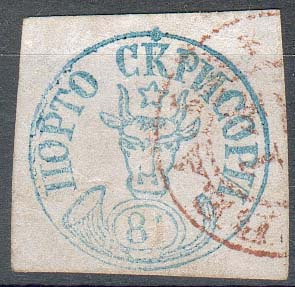


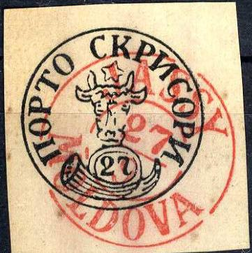


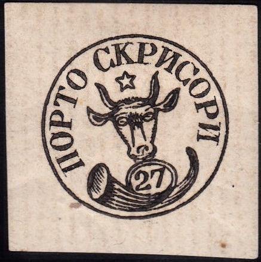


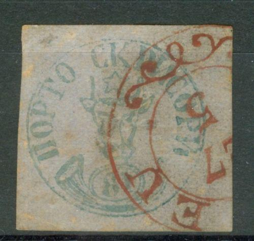
Return To Catalogue - Rumania 1858 first issue, forgeries, part 2 - Rumania 1858 first issue - Cancels on the first issues
Note: on my website many of the
pictures can not be seen! They are of course present in the
catalogue;
contact me if you want to purchase it.
The most famous stamps of Romania are the famous “Bull’s Head” or "Cap de Bour" stamps of 1858. Actually, those stamps were issued by the Principality of Moldova (Moldavia). In 1859 Moldova was united with the Principality of Wallachia to form Romania. At that time Transylvania was still under Austro-Hungarian occupation. In 1916, Romania declared war against Germany and Austro-Hungary. After the war, Transylvania and Bucovina became part of Romania.
From the approximately 24,000 stamps issued, only 724 survived, with only 89 on cover. They are considered as one of the world’s rarities. Another source (http://www.rpsl.org.uk/moldavia/index.html) says that 778 stamps survived. The stamps were issued on 21 July 1858, but the first known date is 29 July 1858. The last known date of use is 31 October 1858. The stamps were hand-printed in sheets of 32 stamps (4 rows of 8 stamps).
The Bull’s Head issue was reprinted twice, and can easily be recognized, because they are printed on different papers than the originals.
Since these stamps are very rare, many forgeries exist, examples:
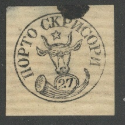
Other forgeries:
   


Forgeries of the 108 pa value with the "8" very narrow
and one eye missing.
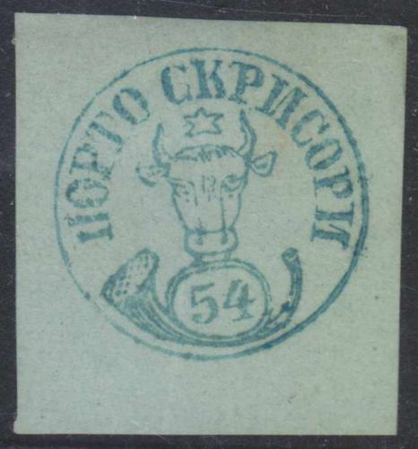 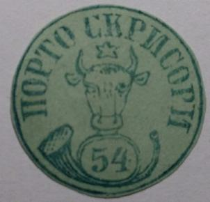 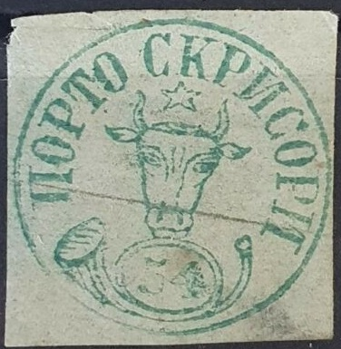
Forgeries of the 54 pa with squeezed star.


'Angry bull' forgery


Engraved forgeries?
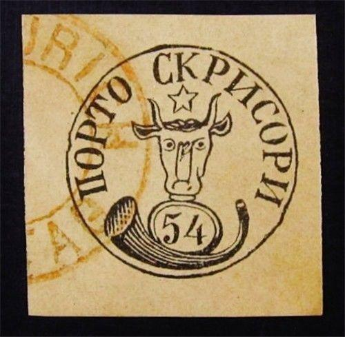


Forgery of the 54 pa with very staring round eyes. There is a
dent in the circle next to the first "O" of
"PORTO"


Two forgeries of the 108 pa with bogus dots cancels.

Two forgeries with a bogus
"FRANCO" cancel.


Very deceptive forgeries of the 54 pa value, both with 'ROMAN 11
12 MOLDOVA' cancel. In my opinion, the '54' is slightly different
(top part of '5' too short, right hand side of '4' slanting
forwards).
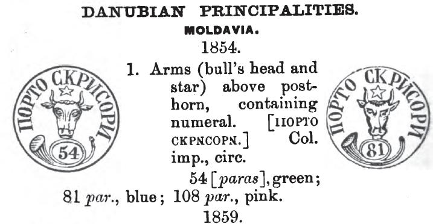


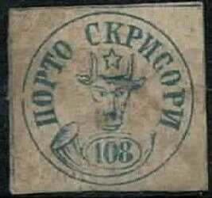

A forgery very similar to the above ones, but with more blurred
design and the "108" larger.


Forgeries of the 108 pa value, with a very large right eye. The
forgeries appear to be slightly different, but clearly inspired
by each other. The third forgery is the most convincing. The
first forgery was clearly based on an illustration of a Schaubek
album (or even a cut-out perhaps?).
even in the wrong colours and values:
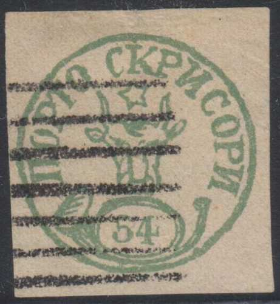


Forgeries in different colors and non-existing values, made by
the same forger.


Forgeries with very short horns on the bull. These two forgeries
were made by the same forger. I've seen the 54 pa with the
erroneous cancel "GALATZ 15 9 MOLDOUA" (Moldovia is
misspelt). I've been told that these are Hamburg forgeries. They
also exist for the next issues (with the same forged city
cancels).
For more forgeries: Rumania 1858 first issue, forgeries, part 2.
http://come.to/romaniastamps/ or http://www.romaniastamps.com/; an enormous amount of interesting data for the Romanian stamp collector.
http://hem.passagen.se/utions/bull/truebull.htm
http://membres.lycos.fr/dgrecu/DM1.html; Romania, A short postal history of Romania, by Dinu Matei, Calgary, Canada, First published in 'Calgary Philatelist', issue #29, April 1998, pp.3-7.
http://membres.lycos.fr/dgrecu/
Literature:


{kind=link}
{kind=link}
{kind=link}
{kind=link}
{kind=link}
{kind=link}
{kind=link}
{kind=link}
{kind=link}
{kind=link}
{kind=link}